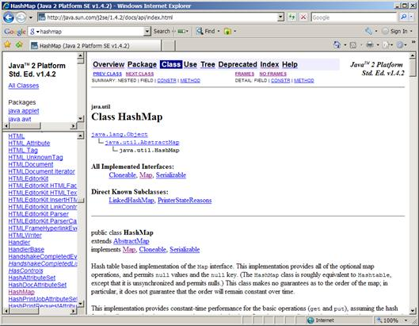
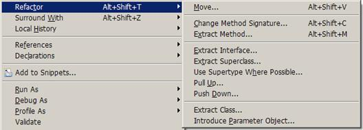
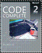
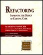

Настоящият текст е част от книгата на Светлин Наков и колектив:
Въведение в програмирането с Java
Можете да изтеглите цялата книга безплатно от www.introprogramming.info.
Настоящият текст е част от книгата на Светлин Наков и колектив:
Можете да изтеглите цялата книга безплатно от www.introprogramming.info.
Михаил Стойнов
Светлин Наков
Николай Василев
В настоящата тема ще разгледаме основните правила за писане на качествен програмен код. Ще бъде обърнато внимание на именуването на елементите от програмата (променливи, методи, класове и други), правилата за форматиране и подреждане на кода, добрите практики за изграждане на висококачествени методи и принципите за качествена документация на кода. Ще бъдат дадени много примери за качествен и некачествен код. Ще бъдат описани и официалните конвенции от Sun за писане на Java, както и JavaBeans спецификацията. В процеса на работа ще бъде обяснено как да се използва средата за програмиране, за да се автоматизират някои операции като форматиране и преработка на кода.
Качеството на една програма има два аспекта – качеството, измерено през призмата на потребителя (наречено външно качество), и от гледна точна на вътрешната организация (наречено вътрешно качество).
Външното качество зависи от това колко коректно работи тази програма. Зависи също от това колко е интуитивен и ползваем е потребителският интерфейс. Зависи и от производителността (колко бързо се справя с поставените задачи).
Вътрешното качество е свързано с това колко добре е построена тази програма. То зависи от архитектурата и дизайна (дали са достатъчно изчистени и подходящи). Зависи от това колко лесно е да се направи промяна или добавяне на нова функционалност (леснота за поддръжка). Зависи и от простотата на реализацията и четимостта на кода. Вътрешното качество е свързано най-вече с кода на програмата.
Качествен програмен код е такъв, който се чете и разбира лесно. Той трябва да е коректен, да има добро форматиране, което консистентно се прилага навсякъде. На всички нива (модули, класове, методи) трябва да има висока свързаност на отговорностите (strong cohesion) и функционална независимост (loose coupling). Подходящо и консистентно именуване на класовете, методите, променливите и останалите елементи също е задължително условие. Кодът трябва да има и добра документация, вградена в него самия.
Нека погледнем следния код:
|
public static void main(String... args) { int i, j, w; final int value=010; i=5; switch(value){case 10:w=5;case 9:i=0;default:; System.out.print("4 ");break; case 8:System.out.print("9 "); System.out.print("9 ");{ System.out.print("9 "); } for(int k = 0;k < i;k++,System.out.print(k-'f'));}{ System.out.println("Cycle"); } }; |
Можете ли да кажете дали този код се компилира без грешки? Можете ли да кажете какво прави само като го гледате? Можете ли да добавите нова функционалност и да сте сигурни, че няма да счупите нищо старо? Можете ли да кажете за какво служи променливата k или променливата w?
В Eclipse има опция за пренареждане на код. Ако горният код бъде сложен в Eclipse и се извика тази опция (клавишна комбинация [Ctrl+Shift+F]), кодът ще бъде преформатиран и ще изглежда съвсем различно. Въпреки това все още няма да е ясно за какво служат променливите, но поне ще е ясно кой блок с код къде завършва.
Ако всички пишеха код както в примера, нямаше да е възможно реализирането на големи и сериозни софтуерни проекти, защото те се пишат от големи екипи от софтуерни инженери. Ако кодът на всички е като в примера по-горе, никой няма да е в състояние да разбере как работи (и дали работи) кодът на другите от екипа, а с голяма вероятност никой няма да си разбира и собствения код.
С времето в професията на програмистите се е натрупал сериозен опит и добри практики за писане на качествен програмен код, за да е възможно всеки да разбере кода на колегите си и да може да го променя и дописва. Тези практики представляват множество от препоръки и правила за форматиране на кода, за именуване на идентификаторите и за правилно структуриране на програмата, които правят писането на софтуер по-лесно. Качественият и консистентен код помага най-вече за поддръжката и лесната промяна. Качественият код е гъвкав и стабилен. Той се чете и разбира лесно от всички. Ясно е какво прави от пръв поглед, поради това е самодокументиращ се. Качественият код е интуитивен – ако не го познавате има голяма вероятност да познаете какво прави само с един бърз поглед. Качественият код е удобен за преизползване, защото прави само едно нещо (strong cohesion), но го прави добре, като разчита на минимален брой други компоненти (loose coupling) и ги използва само през публичните им интерфейси. Качественият код спестява време и труд и прави написания софтуер по-ценен.
Преди да продължим с препоръките за писане на качествен програмен код ще поговорим малко за код-конвенции. Код-конвенция е група правила за писане на код, използвана в рамките на даден проект или организация. Те могат да включват правила за именуване, форматиране и логическа подредба. Едно такова правило например може да препоръчва класовете да започват с главна буква, а променливите – с малка. Друго правило може да твърди, че къдравата скоба за нов блок с програмни конструкции се слага на същия ред, а не на нов ред.
Конвенциите са започнали да се появяват в големи и сериозни проекти, в които голям брой програмисти са пишели със собствен стил и всеки от тях е спазвал собствени (ако въобще е спазвал някакви) правила. Това е правело кода по-трудно четим и е принудило ръководителите на проектите да въведат писани правила. По-късно най-добрите код конвенции са придобили популярност и са станали де факто стандарт.
Sun, компанията, която стои зад езика и платформата Java, публикува официално своята код-конвенция за писане на Java още през далечната 1999 година. От тогава тази код конвенция е добила голяма популярност и е широко разпространена. Правилата за именуване на идентификаторите и за форматиране на кода, които ще дадем в тази тема, са в синхрон с код конвенцията на Sun.
|
|
Неконсистентното използване на една конвенция е по-лошо и по-опасно от липсата на конвенция въобще. |
Идентификатори са имената на класове, интерфейси, изброими типове, анотации, методи и променливи. В Java и в много други езици имената на идентификаторите се избират от разработчика. Имената не трябва да бъдат случайни. Те трябва да са съставени така, че да носят полезна информация за какво служат и каква точно роля изпълняват в съответния код. Така кодът става по-лесно четим.
Едно от най-основните правила е, винаги да се използва английски език. Помислете само ако някой виетнамец използва виетнамски език, за да си кръщава променливите и методите. Какво ще разберете, ако четете неговия код? Ами какво ще разбере виетнамецът, ако вие сте ползвали български и след това той се наложи да допише вашия код. Единственият език, който всички програмисти владеят, е английският.
|
|
Английският език е де факто стандарт при писането на софтуер. Винаги използвайте английски език за имената на идентификаторите в сорс кода (променливи, методи, класове и т.н.). |
Нека сега разгледаме как да подберем подходящите идентификатори в различните случаи.
От главата "Принципи на обектно-ориентираното програмиране" знаем, че класовете описват обекти от реалния свят. Имената на класовете трябва да са съставени от съществително име (нарицателно или собствено) и от едно или няколко прилагателни (преди или след съществителното). Например класът описващ Африканския лъв ще се казва AfricanLion. Тази нотация на именуване се нарича Pascal Case – първата буква на всяка дума от името е главна, а останалите са малки. Така по-лесно се чете (забележете разликата между concurrenthashmap срещу ConcurrentHashMap).
Да дадем още няколко примера. Трябва да напишем клас, който намира прости числа в даден интервал. Добро име за този клас е PrimeNumbers или PrimeNumbersFinder или PrimeNumbersScanner. Лоши имена биха могли да бъдат FindPrimeNumber (не трябва да ползваме глагол за име на клас) или Numbers (не става ясни какви числа и какво ги правим) или Prime (не трябва да името на клас да е прилагателно).
Изключително лошо име на клас е Problem12. Някои начинаещи програмисти дават такова име за решението на задача 12 от упражненията. Това е изключително грешно! Какво ще ви говори името Problem12 след 1 седмица или след 1 месец? Ако задачата търси път в лабиринт, дайте и име PathInLabyrinth. След 3 месеца може да имате подобна задача и да трябва да намерите задачата за лабиринта. Как ще я намерите, ако не сте й дали подходящо име? Не давайте име, което съдържа числа – това е индикация за лошо именуване.
|
|
Името на класа трябва да описва за какво служи този клас. Решението на задача 12 от упражненията не трябва да се казва Problem12 или Zad12. Това е груба грешка! |
Съкращения трябва се избягват, защото могат да бъдат объркващи. Например за какво ви говори името на клас GrBxPnl? Не е ли по-ясно, ако името е GroupBoxPanel? Изключения се правят за акроними, които са по-популярни от пълната си форма, например HTML или URL. Например името HTMLParser е препоръчително пред HyperTextMarkupLanguageParser.
Имената на класовете не трябва да надвишават в общия случай 20 символа, но понякога това правило не се спазва, защото се налага да се опише обект от реалността, който се състои от няколко дълги думички. В стандартните Java библиотеки има класове с дължина 40 символа, като примерно класовете ContentHandlerAlreadyRegisteredException и SQLIntegrityConstraintViolationException. Въпреки дължината е ясно за какво служат и двата класа. По тази причината препоръката за дължина до 20 символа, е само ориентировъчна, а не задължителна. Ако може едно име да е по-кратко и също толкова ясно, колкото дадено по-дълго име, предпочитайте по-краткото.
Имената на интерфейсите, изброимите типове (enums) и анотациите трябва да следват същата конвенция, както имената на класовете: изписват се в Pascal Case и се състоят от съществително и евентуално прилагателни.
В Java има още една нотация за имена интерфейси: да завършват на able: Runnable, Serializable, Cloneable. Това са интерфейси, които най-често добавят допълнителна роля към основната роля на един обект. В Java повечето интерфейси не следват тази нотация, например интерфейсите Map и Set.
В имената на методите отново всяка отделна дума трябва да е с главна буква, но за разлика от Pascal Case, тук първата буква е малка. Тази нотация се нарича camelCase.
Имената на методите трябва да се съставят по схемата <глагол> + <обект>, например printReport(), loadSettings() или setUserName(). Обектът може да е съществително или да е съставен от съществително и прилагателно, например showAnswer(), connectToRandomTorrentServer() или findMaxValue().
Като примери за лоши имена на методи можем да дадем следните: doWork() (не става ясно каква точно работа върши), printer() (няма глагол), find2() (ами защо не е find7()?), chkErr() (не се препоръчват съкращения), nextPosition() (няма глагол).
Понякога единични глаголи са също добро име за метод, стига да става ясно какво прави съответния метод и върху какви обекти оперира. Например ако имаме клас Task, методите start(), stop() и cancel() са с добри имена, защото става ясно, че стартират, спират или оттеглят изпълнението на задачата, в текущия обект (this). В други случаи единичния глагол е грешно име, примерно в клас с име Utils методи с имена evaluate(), create() или stop() са неадекватни.
Имената на методите, които връщат стойност, трябва да описват връщаната стойност, например getNumberOfProcessors(), findMinPath(), getPrice(), getRowsCount(), createNewInstance().
Примери за лоши имена на методи, които връщат стойност (функции) са следните: showReport() (не става ясно какво връща методът), value() (трябва да е getValue() или hasValue()), student() (няма глагол), empty() (трябва да е isEmpty()).
Името трябва да описва всичко, което методът извършва. Ако не може да се намери подходящо име, значи няма силна свързаност на отговорностите (strong cohesion), т.е. методът върши много неща едновременно и трябва да се раздели на няколко отделни метода.
Ето един пример: имаме метод, който праща e-mail, печата отчет на принтер и изчислява разстояние между точки в тримерното евклидово пространство. Какво име ще му дадем? Може би ще го кръстим sendEmailAndPrintReportAndCalc3DDistance()? Очевидно е, че нещо не е наред с този метод – трябва да преработим кода вместо да се мъчим да дадем добро име. Още по-лошо е, ако дадем грешно име, примерно sendEmail(). Така подвеждаме всички останали програмисти, че този метод праща поща, а той всъщност прави много други неща.
|
|
Даването на заблуждаващо име за метод е по-лошо дори от това да го кръстим method1(). Например ако един метод изчислява косинус, а ние му дадем за име sqrt(), ще си навлечем яростта на всички колеги, които се опитват да ползват нашия код. |
Лоша практика е за имена на методи да се използват безлични и общи думички, например handleStuff() и processData(). Какво вършат тези методи според вас? Става ли ясно?
Не се препоръчва да се използват цифри в името, например readProfile1() и readProfile2(). При такива имена веднага възниква въпросът каква е разликата между методите и защо нямаме readProfile3.
Дължината на името трябва да е толкова дълга, колкото е необходимо. Нормалното име на метод е в рамките на 9-15 символа. Ако името е прекалено дълго, ней-вероятно имаме лоша кохезия. Това правило не е твърдо и служи само за ориентир.
Имената на методите трябва да са на английски език. Вече обяснихме защо – никой не иска да чете код писан от чужденци с имена на методите на техния си език.
Консистентно трябва да се именуват методи, които извършват противоположни операции: open() и close(), read() и write(). Лош пример би бил: openFile() и _descriptor_close().
Използвайте конвенция за честите операции. Например за четене и писане можем да ползваме getXXX() и setXXX(): getName(), getAge(), setName(), setAge(). Спазвайте тази конвенция навсякъде.
В света на Java има още една изключително популярна спецификация. Нарича се JavaBeans (пише се слято). JavaBeans е група от правила и интерфейси за писане на преизползваеми компоненти. Нека разгледаме правилата, които се отнасят до методите. По-късно ще опишем по-подробно тази спецификация.
JavaBeans препоръчва, всяка една член-променлива да бъде скрита (private), а достъпът до нея да се осъществява от специални методи наречени модификатори (getters and setters, accessor methods).
Имената на тези методи са изведени от името на променливата. За всяка член-променлива има два метода – един за четене и един за писане. На метода за четене името му е get + <името на променливата>, на метода за писане – set + <името на променливата>. Името на променливата и в двата случая от CamelCase става в Pascal case.
Например ако името на променливата е numberOfProcessors, то модификаторите (accessors) ще са с имена getNumberOfProcessors() и setNumberOfProcessors().
Ето един пример за използване на JavaBeans конвенцията за капсулиране на достъпа до член-променливи:
|
Person.java |
|
package introjavabook;
public class Person {
private String name; private String age; private int numberOfChildren; private boolean male;
public String getName() { return name; }
public void setName(String name) { this.name = name; }
public String getAge() { return age; }
public void setAge(String age) { this.age = age; }
public int getNumberOfChildren() { return numberOfChildren; }
public void setNumberOfChildren(int numberOfChildren) { this.numberOfChildren = numberOfChildren; }
public boolean isMale() { return male; }
public void setMale(boolean male) { this.male = male; } } |
Забележете, че член-променливата е private, а модификаторите – public. Забележете, че методът за четене (getter) на член-променливата male е isMale() вместо getMale(). JavaBeans спецификацията повелява думичката is да се използва вместо get за булевите член-променливи.
Имената на променливите (променливи използвани в метод) и член-променливите (променливи използвани в клас) според Sun конвенцията трябва да спазват camelCase нотацията.
Променливите трябва да имат добро име. Добро име е такова, което ясно и точно описва обекта, който променливата съдържа. Например добри имена на променливи са account, blockSize и customerDiscount. Лоши имена са: r18pq, __hip, rcfd, val1, val2.
Името трябва да адресира проблема, който решава променливата. Тя трябва да отговаря на въпроса “какво", а не “как". В този смисъл добри имена са employeeSalary, employees. Лоши имена са, несвързаните с решавания проблем имена myArray, customerFile, customerHashTable.
Оптималната дължина на името на променлива е от 10 до 16 символа. Изборът на дължината на името зависи от обхвата – променливите с по-голям обхват и по-дълъг живот имат по-дълго и описателно име:
|
protected Account[] customerAccounts; |
Променливите с малък обхват и кратък живот могат да са по-кратки:
|
for (int i=0; i<customers.Length; i++) { … } |
Имената на променливите трябва да са разбираеми без предварителна подготовка. Поради тази причина не е добра идея да се премахват гласните от името на променливата с цел съкращение – btnDfltSvRzlts не е много разбираемо име.
Най-важното е, че каквито и правила да бъдат изградени за именуване на променливите, те трябва да бъдат консистентно прилагани навсякъде из кода, в рамките на всички модули на целия проект и от всички членове на екипа. Неконсистентно прилаганото правило е по-опасно от липсата на правило въобще.
В Java константите са статични непроменими променливи и се дефинират по следния начин:
|
public class ThreadPool { public static final int <variable name> = <value>; } |
Имената на константите трябва да се изписват изцяло с главни букви с долна черта между думите. Пример:
|
public class ThreadPool { public static final int MAX_POOL_SIZE = 16; } |
Имената на константите точно и ясно трябва да описват смисъла на даденото число, стринг или друга стойност, а не самата стойност. Например, ако една константа се казва number314159, тя е безполезна.
Имената на променливи, използвани за броячи, е хубаво да включват в името си дума, която указва това, например usersCount, rolesCount, filesCount.
Променливи, които се използват за описване на състояние на даден обект, трябва да бъдат именувани подходящо. Ето няколко примера: ThreadState, TransactionState.
Временните променливи най-често са с безлични имена (което указва, че са временни променливи, т.е. имат много кратък живот). Добри примери са index, value, count. Неподходящи имена са a, aa, tmpvar1, tmpvar2.
Имената на булевите променливи трябва да дават предпоставка за истина или лъжа. Например: canRead, available, isOpen, valid. Примери за неадекватни имена на булеви променливи са: student, read, reader.
В по-старите езици (например C) съществуват префиксни или суфиксни нотации за именуване. Много популярна в продължение на много години е била Унгарската нотация. Унгарската нотация е префиксна конвенция за именуване, чрез която всяка променлива получава префикс, който обозначава типа й или предназначението й. Например в Win32 API името lpcstrUserName би означавало променлива, която представлява указател към масив от символи, който завършва с 0 и се интерпретира като стринг.
В Java подобни конвенции не са придобили популярност, защото средите за Java показват типа на всяка променлива. Изключение донякъде правят графични библиотеки като Swing и AWT.
Форматирането, заедно с именуването, е едно от основните изисквания за четим код. Без форматиране, каквито и правила да спазваме за имената и структурирането на кода, кодът няма да се чете лесно.
Целта на доброто форматиране е да направи кода по-ясен и по-лесен за четене. Ако форматирането прави кода по-труден за четене, значи не е добро. Всяко форматиране (отместване, празни редове, подреждане, подравняване и т.н.) може да донесе както ползи, така и вреди. Важно е форматирането на кода да следва логическата структура на програмата, така че да подпомага четенето и логическото й разбиране.
|
|
Форматирането на програмата трябва да разкрива неговата логическа структура. Всички правила за форматиране на кода имат една и съща цел – подобряване на четимостта на кода чрез разкриване на логическата му структура. |
В Eclipse кодът може да се форматира автоматично с клавишната комбинация [Ctrl+Shift+F]. Могат да бъдат зададени различни стандарти за форматиране на код – Sun конвенцията, стандартът на Eclipse, както и потребителски дефинирани стандарти.
Сега ще разгледаме правилата за форматиране от код-конвенцията на Sun за Java.
Съгласно конвенцията за писане на код, препоръчана от Sun, е добре да се спазват някои правила за форматиране на кода, при декларирането на методи.
Когато в един клас имаме повече от един метод, трябва да разделяме декларациите им с един празен ред:
|
IndentationExample.java |
|
public class IndentationExample {
public static void doSth1() { // ... }// Follows one blank line
public static void doSth2() { // ... } } |
Декларацията на метода ни е на първо място на реда, на който се намира (т.е. няма никакъв друг код пред нея), отместена с един знак за табулация по-навътре, спрямо началото на декларацията на класа, в който е деклариран метода:
|
public class IndentationExample {
// The following method definition is indented public static void doSth() { // ... Code ... } } |
В конвенцията за писане на код, на Sun, се препоръчва, между ключова дума, като например – for, while, if, switch... и отваряща скоба да поставяме интервал:
|
while (true) { // ... Code ... } |
Това се прави с цел да се различават по-лесно ключовите думи и имената на методите.
В този ред на мисли, между името на метода и отварящата кръгла скоба – "(", НЕ трябва да има невидими символи (интервал, табулация и т.н.):
|
public static void printLogo() { // ... Code ... } |
Когато имаме метод с много параметри, трябва добре да оставяме един интервал разстояние между поредната запетайка и типа на следващия параметър:
|
public void doSth(int param1, int param2, int param3) {} |
Съответно, същото правило прилагаме, когато извикваме метод с повече от един параметър. Преди аргументите, предшествани от запетайка, поставяме интервал:
|
doSth(1, 2, 3); |
Съгласно конвенцията на Sun за писане на код, трябва да поставяме отварящата скоба на тялото на метода "{", на същия ред, на който е декларацията на метода. Това правило поражда много спорове с програмисти, които са свикнали да пишат на други езици (например на C#).
Затварящата скоба на тялото на метода "}", трябва да се намира на нов ред, точно след края на тялото на метода. Отместването на затварящата скоба, трябва да съвпада с отместването на началото на декларацията на метода. Ето един пример:
|
public static void printLogo() { // ... Code ... } |
В случай, че тялото на метода е празно, поставяме затварящата скоба на метода непосредствено след отварящата:
|
public static void printLogo() {} |
Кодът, който се намира в тялото на метода ни, трябва да започва с отместване от една табулация по-навътре, спрямо отместването, от което започва декларацията на метода:
|
public static void printLogo() { // ... The code is indented with one tabulator ... } |
Когато създаваме класове също е добре да следваме няколко препоръки от Sun за форматиране на кода в класовете.
Отварящата фигурна скоба "{" на тялото на класа трябва да е на края на същия ред, на който приключва декларацията на класа.
Затварящата скоба на тялото на класа "}" трябва да се намира на същото отместване, като отместването на началото на дефиницията на класа. Ето един пример:
|
public class Boo { // ... code ... } |
В случай, че тялото на класа е празно, затварящата скоба на класа трябва да бъде поставена непосредствено след отварящата:
|
public class Boo {} |
Кодът, който се намира в тялото на класа, трябва да започва с отместване от една табулация по-навътре, спрямо отместването, от което започва дефиницията на класа:
|
public class Boo { // ... the code is indented with one tabulator ... } |
Както знаем, на първия ред се декларира името на класа, предхождано от ключовата дума class:
|
// class SomeClassName |
След това се декларират статичните полета на класа, като първо се декларират тези с модификатор за достъп public, след това тези с protected и накрая – с private:
|
// Class (static) variables |
След статичните полета на класа, се декларират и нестатичните полета. По подобие на статичните, първо се декларират тези с модификатор за достъп public, след това тези с protected и накрая – тези с private:
|
// Instance variables |
След нестатичните полета на класа, идва ред на декларацията на конструкторите:
|
// Constructors |
Най-накрая, след конструкторите, се декларират методите на класа. Препоръчва се да групираме методите по функционалност, вместо по ниво на достъп или област на действие. Например, метод с модификатор за достъп private, може да бъде между два метода с модификатори за достъп – public. Целта на всичко това е да се улесни четенето и разбирането на кода:
|
// Methods grouped by functionality |
Нека разгледаме един клас, в който съдържанието на класа е подредено по конвенцията:
|
Dog.java |
|
//class statement public class Dog {
// Class (static) variables public static final String SPECIES = "Canis Lupus Familiaris";
// Instance variables private String name;
// Constructors public Dog(String name) { this.name = name; }
// Methods grouped by functionality
// -- Getters and setters
public String getName() { return name; }
public void setName(String name) { this.name = name; }
// -- Other methods
public void breath() { // ... code executing the breathing process }
public void bark() { System.out.println("wow-wow"); } } |
Съответно методите са групирани в две групи. Едната група е свързана с извличане и модифициране на стойностите на полетата на класа. В другата са методи (в нашия клас само два – bark() и breath()), които са свързани със спецификата на дейностите, които обектите от класа Dog могат да извършват – дишане и лаене.
Форматирането на цикли и условни конструкции следва правилата за форматиране на методи и класове. Тялото на условна конструкция или цикъл задължително се поставя в блок, започващ с "{" и завършващ със "}". Скобата се поставя на същия ред, веднага след условието на цикъла или условната конструкция. Тялото на цикъл или условна конструкция задължително се отмества надясно с една табулация. Ако тялото съдържа само един оператор, също се слагат скоби, макар и компилаторът да не ни задължава да го правим. Ако условието е дълго и не се събира на един ред, се пренася на нов ред с две табулации надясно. Ето пример за коректно форматирани цикъл и условна конструкция:
|
for (List<DictionaryEntry<K, V>> chain : this.getHashTableStorage()) { if (chain != null) { entries.addAll(chain); } } |
Изключително грешно е да се използва отместване от края на условието на цикъла или условната конструкция като в този пример:
|
for (Student s : students) { System.out.println(s.getName()); System.out.println(s.getAge()); } |
Типично за начинаещите програмисти е да поставят безразборно в програмата си празни редове. Наистина, празните редове не пречат, защо да не ги поставяме, където си искаме и защо да ги чистим, ако няма нужда от тях? Причината е много проста: празните редове се използват за разделяне на части от програмата, които не са логическо свързани. Празни редове се поставят за разделяне на методите един от друг, за отделяне на група член-променливи от друга група член-променливи, които имат друга логическа задача, за отделяне на група програмни конструкции от друга група програмни конструкции, които представляват две отделни части на програмата.
Ето един пример, в който празните редове не са използвани правилно и това затруднява четимостта на кода:
|
public static void printList(ArrayList<Integer> list) { System.out.print("{ "); for (Integer item : list) { System.out.print(item);
System.out.print(" ");
} System.out.println("}"); } public static void main(String[] args) { ArrayList<Integer> firstList = new ArrayList<Integer>(); firstList.add(1);
firstList.add(2); firstList.add(3); firstList.add(4); firstList.add(5); System.out.print("firstList = "); printList(firstList); ArrayList<Integer> secondList = new ArrayList<Integer>(); secondList.add(2);
secondList.add(4); secondList.add(6); System.out.print("secondList = "); printList(secondList); ArrayList<Integer> unionList = new ArrayList<Integer>(); unionList.addAll(firstList); unionList.removeAll(secondList);
unionList.addAll(secondList); System.out.print("union = ");
printList(unionList); } |
Сами виждате, че празните редове не показват логическата структура на програмата, с което нарушават основното правило за форматиране на кода. Ако преработим програмата, така че да използваме правилно празните редове за отделяне на логически самостоятелните части една от друга, ще получим много по-лесно четим код:
|
public static void printList(ArrayList<Integer> list) { System.out.print("{ "); for (Integer item : list) { System.out.print(item); System.out.print(" "); } System.out.println("}"); }
public static void main(String[] args) { ArrayList<Integer> firstList = new ArrayList<Integer>(); firstList.add(1); firstList.add(2); firstList.add(3); firstList.add(4); firstList.add(5); System.out.print("firstList = "); printList(firstList);
ArrayList<Integer> secondList = new ArrayList<Integer>(); secondList.add(2); secondList.add(4); secondList.add(6); System.out.print("secondList = "); printList(secondList);
ArrayList<Integer> unionList = new ArrayList<Integer>(); unionList.addAll(firstList); unionList.removeAll(secondList); unionList.addAll(secondList); System.out.print("union = "); printList(unionList); } |
Когато даден ред е дълъг, разделете го на два или повече реда, като редовете след първия отместете надясно с една табулация:
|
DictionaryEntry<K, V> newEntry = new DictionaryEntry<K, V>(key, value); |
Грешно е да подравнявате сходни конструкции спрямо най-дългата от тях, тъй като това затруднява поддръжката на кода:
|
this.table = new List[capacity]; this.loadFactor = loadFactor; this.threshold = (int) (this.table.length * this.loadFactor); |
Грешно е да подравнявате параметрите при извикване на метод вдясно спрямо скобата за извикване:
|
System.out.printf("word '%s' is seen %d times in the text%n", wordEntry.getKey(), wordEntry.getValue()); |
Същият код може да се форматира правилно да се форматира по следния начин (този начин не е единственият правилен):
|
System.out.printf( "word '%s' is seen %d times in the text%n", wordEntry.getKey(), wordEntry.getValue()); |
Качеството на нашите методи е от съществено значение за създаването на висококачествен софтуер и неговата поддръжка. Те правят програмите ни по-четливи и по-разбираеми. Методите ни помагат да намалим сложността на софтуера, да го направим по-гъвкав и по-лесен за модифициране.
От нас зависи, до каква степен ще се възползваме от тези предимства. Колкото по-високо е качеството на методите ни, толкова повече печелим от тяхната употреба. В следващите параграфи ще се запознаем с някои от основните принципи за създаване на качествени методи.
Преди да започнем да говорим за добрите имена на методите, нека отделим известно време и да обобщим причините, поради които използваме методи.
Методът решава по-малък проблем. Много методи решават много малки проблеми. Събрани заедно, те решават по-голям проблем – това е римското правило "разделяй и владей" – по-малките проблеми се решават по-лесно.
Чрез методите се намалява сложността на задачата – сложните проблеми се разбиват на по-прости, добавя се допълнително ниво на абстракция, скриват се детайли за имплементацията и се намалява рискът от неуспех. С помощта на методите се избягва повторението на еднакъв код. Скриват се сложни последователности от действия.
Най-голямото предимство на методите е възможността за преизползване на код – те са най-малката преизползваема единица код. Всъщност точно така са възникнали методите.
Един метод трябва да върши работата, която е описана в името му и нищо повече. Ако един метод не върши това, което предполага името му, то или името му е грешно, или методът върши много неща едновременно, или просто методът е реализиран некоректно. И в трите случая методът не отговаря на изискванията за качествен програмен код и има нужда от преработка.
Един метод или трябва да свърши работата, която се очаква от него, или трябва да съобщи за грешка. В Java съобщаването за грешки се осъществява с хвърляне на изключение. При грешни входни данни е недопустимо даден метод да връща грешен резултат. Методът или трябва да работи коректно или да съобщи, че не може да свърши работата си, защото не са на лице необходимите му условия (при некоректни параметри, неочаквано състояние на обектите и др.).
Например ако имаме метод, който прочита съдържанието на даден файл, той трябва да се казва readFileContents() и трябва да връща byte[] или String (в зависимост дали говорим за двоичен или текстов файл). Ако файлът не съществува или не може да бъде отворен по някаква причина, методът трябва да хвърли изключение, а не да върне празен низ или null. Връщането на неутрална стойност (например null) вместо съобщение за грешка не е препоръчителна практика, защото извикващият метод няма възможност да обработи грешката и изгубва носещото богата информация изключение.
Описаното правило има някои изключения. Обикновено то се прилага най-вече за публичните методи в класа. Те или трябва да работят коректно, или трябва да съобщят за грешка. При скритите (private) методи може да не се проверява за некоректни параметри, тъй като тези методи може да ги извика само авторът на класа, а той много добре знае какво подава като параметри и не винаги трябва да обработва изключителните ситуации, защото може да ги предвиди.
|
|
Един публичен метод или трябва да върши коректно точно това, което предполага името му, или трябва да съобщава за грешка. Всякакво друго поведение е некоректно. |
Правилата за логическа свързаност на отговорностите (strong cohesion) и за функционална независимост и минимална обвързаност с останалите методи и класове (loose coupling) важат с пълна сила за методите.
Вече обяснихме, че един метод трябва да решава един проблем, не няколко. Един метод не трябва да има странични ефекти или да решава няколко несвързани задачи, защото няма да можем да му дадем подходящо име, което пълно и точно го описва. Това означава, че всички методи, които пишем, трябва да имат strong cohesion, т.е. да са насочени към решаването на една единствена задача.
Методите трябва минимално да зависят от останалите методи и от класа, в който се намират и от останалите класове. Това свойство се нарича loose coupling.
В идеалния случай даден метод трябва да зависи единствено от параметрите си и да не използва никакви други данни като вход или като изход. Такива методи лесно могат да се извадят и да се преизползват в друг проект, защото са независими от средата, в която се изпълняват.
Понякога методите зависят от private променливи в класа, в който са дефинирани или променят състоянието на обекта, към който принадлежат. Това не е грешно и е нормално. В такъв случай говорим за обвързване (coupling) между метода и класа. Такова обвързване не е проблемно, защото целият клас може да се извади и премести в друг проект и ще започне да работи без проблем. Повечето класове от стандартните библиотеки на Java (от т. нар. Java API) дефинират методи, които зависят единствено от данните в класа, който ги дефинира и от подадените им параметри. В стандартните Java библиотеки зависимостите на методите от външни класове са минимални и затова тези библиотеки са лесни за използване.
Ако даден метод чете или променя глобални данни или зависи от още 10 обекта, които трябва да се инициализирани в инстанцията на неговия клас, той е силно обвързан с всички тези обекти. Това означава, че функционира сложно и се влияе от прекалено много външни условия и следователно възможността за грешки е голяма. Методи, които разчитат не прекалено много външни зависимости, са трудни за четене, за разбиране и за поддръжка. Силното функционално обвързване е лошо и трябва да се избягва, доколкото е възможно, защото води до код като спагети.
През годините са правени различни изследвания за оптималната дължина на методите, но в крайна сметка универсална формула за дължина на даден метод не съществува.
Практиката показва, че като цяло трябва да предпочитаме по-кратки методи (примерно не повече от един екран). Те са по-лесни за четене и разбиране, а вероятността да допуснем грешка при тях е значително по-малка.
Колкото по-голям е един метод, толкова по-сложен става той. Последващи модификации са значително по-трудни, отколкото при кратките методи и изискват много повече време. Тези фактори са предпоставка за допускане на грешки и по-трудна поддръжка.
Препоръчителната дължина на един метод е не-повече от един екран, но тази препоръка е само ориентировъчна. Ако методът се събира на екрана, той е по-лесен за четене, защото няма да се налага скролиране. Ако методът е по-дълъг от един екран, това трябва да ни накара да се замислим дали не можем да го разделим логически на няколко по-прости метода. Това не винаги е възможно да се направи по смислен начин, така че препоръката за дължината на методите е ориентировъчна.
Макар дългите методи да не са за предпочитане, това не трябва да е безусловна причина да разделяме на части даден метод само защото е дълъг. Методите трябва да са толкова дълги, колкото е необходимо.
|
|
Силната логическа свързаност на отговорностите при методите е много по-важна от дължината им. |
Ако реализираме сложен алгоритъм и в последствие се получи дълъг метод, който все пак прави едно нещо и го прави добре, то в този случай дължината не е проблем.
Във всеки случай, винаги, когато даден метод стане прекалено дълъг, трябва да се замисляме, дали не е по-подходящо да изнесем част от кода в отделни методи, изпълняващи определени подзадачи.
Едно от основните правила за подредба на параметрите на методите е основният или основните параметри да са първи. Пример:
|
public void archive(PersonData person, boolean persistent) { |
Обратното би било доста по-объркващо:
|
public void archive(boolean persistent, PersonData person) { |
Друго основно правило е имената на параметрите да са смислени. Честа грешка, особено при Java, е имената на параметрите да бъдат свързани с имената на типовете им. Пример:
|
public void archive(PersonData personData) { |
Вместо нищо незначещото име personData (което носи информация единствено за типа), можем да използваме по-добро име (така е доста по-ясно кой точно обект архивираме):
|
public void archive(PersonData loggedUser) { |
Ако има методи с подобни параметри, тяхната подредба трябва да е консистентна. Това би направило кода много по-лесен за четене:
|
public void archive(PersonData person, boolean persistent) { // ... }
public void retrieve(PersonData person, boolean persistent) { // ... } |
Важно е да няма параметри, които не се използват. Те само могат да подведат ползвателя на този код.
Параметрите не трябва да се използват и като работни променливи – не трябва да модифицират. Ако модифицирате параметрите на методите, кодът става по-труден за четене и логиката му – по-трудна за проследяване. Винаги можете да дефинирате нова променлива вместо да променяте параметър. Пестенето на памет не е оправдание в този сценарий.
Неочевидните допускания трябва да се документират. Например мерната единица при подаване на числа. Например, ако имаме метод, който изчислява косинус от даден ъгъл, трябва да документираме дали ъгълът е в градуси или в радиани, ако това не е очевидно.
Броят на параметрите не трябва да надвишава 7. Това е специално, магическо число. Доказано е, че човешкото съзнание не може да следи повече от около 7 неща едновременно. Разбира се, тази препоръка е само за ориентир. Понякога се налага да предавате и много повече параметри. В такъв случай се замислете дали не е по-добре да ги предавате като някакъв клас с много полета. Например ако имате метода addStudent(…) с 15 параметъра (име, адрес, контакти и още много други), можете да намалите параметрите му като подавате групи логически свързани параметри като клас, примерно така: addStudent(personalData, contacts, universityDetails). Всеки от новите 3 параметъра ще съдържа по няколко полета и пак ще се прехвърля същата информация, но в по-лесен за възприемане вид.
Понякога е логически по-издържано вместо един обект на метода да се подадат само едно или няколко негови полета. Това ще зависи най-вече от това дали методът трябва да знае за съществуването на този обект или не. Например имаме метод, който изчислява средния успех на даден студент – calcAverageResults(Student s). Понеже успехът се изчислява от оценките на студента и останалите му данни нямат значение, е по-добре вместо Student да се предава като параметър списък от оценки. Така методът придобива вида calcAverageResults(List<Mark>).
В този параграф ще разгледаме няколко добри практики при локалната работа с променливи.
Когато връщаме резултат от метод, той трябва да се запази в променлива преди да се върне. Следният пример не казва какво се връща като резултат:
|
return days * hoursPerDay * ratePerHour; |
По-добре би било така:
|
int salary = days * hoursPerDay * ratePerHour; return salary; |
Има няколко причини да запазваме резултата преди да го видим. Едната е, че така документираме кода – по името на допълнителната променлива става ясно какво точно връщаме. Другата причина е, че когато дебъгваме програмата, ще можем да я спрем в момента, в който е изчислена връщаната стойност и ще можем да проверим дали е коректна. Третата причина е, че избягваме сложните изрази, които понякога може да са няколко реда дълги и заплетени.
В Java всички член-променливи в класовете се инициализират автоматично още при деклариране (за разлика от C/C++). Това се извършва от виртуалната машина. Така се избягват грешки с неправилно инициализирана памет. Всички променливи, сочещи обекти (reference type variable) се инициализират с null, а всички примитивни типове – с 0 (false за boolean).
Компилаторът задължава всички локални променливи в кода на една програма да бъдат инициализирани изрично преди употреба, иначе връща грешка при компилация. Ето един пример, който ще предизвика грешка при компилация, защото се прави опит за използване на неинициализирана променлива:
|
int value; System.out.println(value); |
При опит за компилация се връща грешка на втория ред:
|
/>javac Program.java Program.java:11: variable value might not have been initialized System.out.println(value); ^ 1 error |
Ето още един малко по-сложен пример:
|
int value; if(<condition1>) { if(<condition2>) { value = 1; } } else { value = 2; } System.out.println(value); |
За щастие компилаторът е достатъчно интелигентен и хваща подобни "недоразумения" – отново същата грешка.
Забележете следната особеност: ако сложим else на вложения if в горния код, всичко ще се компилира. Компилаторът проверява всички възможни пътища, по които може да мине изпълнението и ако при всеки един от тях има инициализация на променливата, той не връща грешка и променливата се инициализира правилно.
Добрата практика е всички променливи да се инициализират изрично още при деклариране:
|
int value = 0; Student intern = null; |
Някои обекти, за да бъдат правилно инициализирани, трябва да имат стойности на поне няколко техни полета. Например обект от тип Човек, трябва да има стойност на полетата "име" и "фамилия". Това е проблем, от който компилаторът не може да ни опази.
Единият начин да бъде решен този проблем е да се премахне конструкторът по подразбиране (конструкторът без параметри) и на негово място да се сложат един или няколко конструктора, които получават достатъчно данни (във формата на параметри) за правилното инициализиране на съответния обект.
Това решение, колкото и да е добро, противоречи на една от основните директиви на JavaBeans спецификацията, а именно всеки обект да има конструктор по подразбиране. Причината за подобно изискване е, че JavaBeans обектите са направени така, че да могат да се използват автоматично от различни библиотеки. Липсата на конструктор по подразбиране би попречила на тези инструменти да създават бързо и лесно такива обекти.
Тази директива не се спазва винаги, но става по-популярна заради все повече нови инструменти за автоматична работа с обекти. Например последната библиотека в Java 6 за работа с уеб услуги – JAX-WS – има подобно изискване.
Решение би било всеки, които ползва такива обекти, да проверява за пълнотата на тези обекти (погледнете секцията за защитно програмиране) или обектите да предоставят метод, който проверява това.
Съгласно конвенцията за писане на код на Sun, една променлива трябва да се декларира в началото на блока или тялото на метода, в който се намира:
|
static int archive() { int result = 0; // beginning of method body
if (<condition>) { int result = 0; // beginning of "if" block // .. Code ... } } |
Изключение правят променливите, които се декларират в инициализиращата част на for цикъла:
|
for (int i = 0; i < data.length; i++) { ... |
Повечето добри програмисти предпочитат да декларират една променлива максимално близо до мястото, на което тя ще бъде използвана и по този начин да намалят нейния живот (погледнете следващия параграф) и същевременно възможността за грешка. Този подход е препоръчителен пред конвенцията на Sun.
Понятието обхват на променлива (variable scope) всъщност описва колко "известна" е една променлива. В Java тя може да бъде (подредени в низходящ ред) статична променлива, член-променлива (на клас) и локална променлива (в метод).
Колкото по-голям е обхватът на дадена променлива, толкова по-голяма е възможността някой да се обвърже с нея и така да увеличи своя coupling, което не е хубаво. Следователно обхватът на променливите трябва да е възможно най-малък.
Добър подход при работата с променливи е първоначално те да са с минимален обхват. При необходимост той да се разширява. Така по естествен начин всяка променлива получава необходимия за работата й обхват. Ако не знаете какъв обхват да ползвате, започвайте от private и при нужда преминавайте към protected или public.
Статичните променливи е най-добре да са винаги private и достъпът до тях да става контролирано, чрез извикване на подходящи методи.
Ето един пример за лошо семантично обвързване със статична променлива – ужасно лоша практика:
|
public class Globals { public static int state = 0; }
public class Genious { public static void printSomething() { if (Globals.state == 0) { System.out.println("Hello."); } else { System.out.println("Good bye."); } } } |
Ако променливата state беше дефинирана като private, такова обвързване нямаше да може да се направи, поне не директно.
Диапазон на активност (span) е средният брой линии между обръщенията към дадена променлива. Той зависи от гъстотата на редовете код, в които тази променлива се използва. Диапазонът на променливите трябва да е минимален. По тази причина променливите трябва да се декларират и инициализират възможно най-близко до мястото на първата им употреба, а не в началото на даден метод или блок. Ето един пример за неправилно използване на променливи (излишно голям диапазон на активност):
|
int count; int[] numbers = new int[100]; for (int i=0; i<numbers.length; i++) { numbers[i] = i; } count = 0; for (int i=0; i<numbers.length/2; i++) { numbers[i] = numbers[i] * numbers[i]; }
for (int i=0; i<numbers.length; i++) { if (numbers[i] % 3 == 0) { count++; } } System.out.println(count); |
В този пример променливата count служи за преброяване на числата, които се делят без остатък на 3 и се използва само в последния for цикъл. Тя е дефинирана излишно рано и се инициализира много преди да има нужда от инициализацията. Ако трябва да се преработи този код, за да се намали диапазонът на активност на променливата count, той ще добие следния вид:
|
int[] numbers = new int[100]; for (int i=0; i<numbers.length; i++) { numbers[i] = i; } for (int i=0; i<numbers.length/2; i++) { numbers[i] = numbers[i] * numbers[i]; }
int count = 0; for (int i=0; i<numbers.length; i++) { if (numbers[i] % 3 == 0) { count++; } } System.out.println(count); |
Живот (lifetime) на една променлива е обемът на кода от първото до последното й рефериране в даден метод. В тази дефиниция имаме предвид само локални променливи, понеже член-променливите живеят докато съществува класът, в който са дефинирани, а статичните променливи – докато съществува виртуалната машина.
Важно е програмистът да следи къде се използва дадена променлива, нейният диапазон на активност и период на живот. Основното правило е да се направят обхватът, животът и активността на променливите колкото се може по-малки. От това следва едно важно правило:
|
|
Декларирайте локалните променливи възможно най-късно, непосредствено преди да ги използвате за първи път, и ги инициализирайте заедно с декларацията им. |
Променливите с по-голям обхват и по-дълъг живот, трябва да имат по-описателни имена, примерно totalStudentsCount. Причината е, че те ще бъдат използвани на повече места и за по-дълго време и за какво служат няма да бъде ясно от контекста. Променливите с живот няколко реда могат да бъдат с кратко и просто име, примерно count. Те нямат нужда от дълги и описателни имена, защото техният смисъл е ясен от контекста, в който се използват, а този контекст е твърде малък (няколко реда), за да има двусмислия.
Една променлива трябва да се използва само за една цел. Това е много важно правило. Извиненията, че ако се преизползва едно променлива за няколко цели се пести на памет, в общия случай не са добро оправдание. Ако една променлива се ползва за няколко съвсем различни цели, какво име ще й дадем? Например, ако една променлива се използва да брои студенти и в някои случаи техните оценки, то как ще я кръстим: count, studentsCount, marksCount или StudentsOrMarksCount?
|
|
Ползвайте една променлива само за една единствена цел. Иначе няма да можете да й дадете подходящо име. |
Никога не трябва да има променливи, които не се използват. В такъв случай тяхното дефиниране е било безсмислено. За щастие сериозните среди за разработка на Java приложения (например Eclipse, но и не само) издават предупреждение за подобни "нередности".
Трябва да се избягват и променливи със скрито значение. Например Пешо е оставил променливата Х, за да бъде видяна от Митко, който трябва да се сети да имплементира още един метод, в който ще я ползва.
При работата с изрази има едно много просто правило: не ползвайте сложни изрази! Сложен израз наричаме всеки израз, който извършва повече от едно действие. Ето пример за сложен израз:
|
for (int i=0; i<xCoord.length; i++) { for (int j=0; j<yCoord.length; j++) { matrix[i][j] = matrix[xCoord[findMax(i)+1]][yCoord[findMin(i)+1]] * matrix[yCoord[findMax(i)+1]][xCoord[findMin(i)+1]]; } } |
В примерния код имаме сложно изчисление, което запълва дадена матрица спрямо някакви изчисления върху някакви координати. Всъщност е много трудно да се каже какво точно се случва, защото е използван сложен израз.
Има много причини, заради които трябва да избягваме използването на сложни изрази като в примера по-горе. Ще изброим някои от тях:
- Кодът трудно се чете. В нашия пример няма да ни е лесно да разберем какво прави този код и дали е коректен.
- Кодът трудно се поддържа. Помислете, какво ще ни струва да поправим грешка в този код, ако не работи коректно.
- Кодът трудно се поправя, ако има дефекти. Ако примерният код по-горе даде ArrayIndexOutOfBoundsException, как ще разберем извън границите на кой точно масив сме излезли? Това може да е масивът xCoord или yCoord или matrix, а излизането извън тези масиви може да е на няколко места.
- Кодът трудно се дебъгва. Ако намерим грешка, как ще дебъгнем изпълнението на този израз, за да намерим грешката?
Всички тези причини ни подсказват, че писането на сложни изрази е вредно и трябва да се избягва. Вместо един сложен израз можем да напишем няколко по-прости изрази и да ги запишем в променливи с разумни имена. По този начин кодът става по-прост, по-ясен, по-лесен за четене и разбиране, по-лесен за промяна, по-лесен за дебъгване и по-лесен за поправяне. Нека сега пренапишем горния код, без да използваме сложни изрази:
|
for (int i=0; i<xCoord.length; i++) { for (int j=0; j<yCoord.length; j++) { int maxStartIndex = findMax(i) + 1; int minStartIndex = findMax(i) - 1; int minXcoord = xCoord[minStartIndex]; int maxXcoord = xCoord[maxStartIndex]; int minYcoord = yCoord[minStartIndex]; int maxYcoord = yCoord[maxStartIndex]; matrix[i][j] = matrix[maxXcoord][minYcoord] * matrix[maxYcoord][minXcoord]; } } |
Забележете колко по-прост и ясен стана кода. Наистина, без да знаем какво точно изчисление извършва този код, ще ни е трудно да го разберем, но ако настъпи изключение, лесно ще намерим на кой ред възниква и чрез дебъгера можем да проследим защо се получава и евентуално да го поправим.
|
|
Не пишете сложни изрази. На един ред трябва да се извършва по една операция. Иначе кодът става труден за четене, за поддръжка, за дебъгване и за промяна. |
В добре написания програмен код не трябва да има "магически числа" и стрингове. Такива наричаме всички литерали в програмата, които имат стойност, различно от 0, 1, -1, "" и null (с дребни изключения).
За да обясним по-добре концепцията за използване на именувани константи, ще дадем един пример за код, който има нужда от преработка:
|
public class MathUtils {
public static double calcCircleArea(double radius) { double area = 3.14159206 * radius * radius; return area; }
public static double calcCirclePerimeter(double radius) { double perimeter = 2 * 3.14159206 * radius; return perimeter; }
public static double calcElipseArea(double axis1, double axis2) { double area = 3.14159206 * axis1 * axis2; return area; }
} |
В примера използваме три пъти числото 3.14159206 (∏), което е повторение на код. Ако решим да променим това число, като го запишем например с по-голяма точност, ще трябва да променим програмата на три места. Възниква идеята да дефинираме това число като стойност, която е глобална за програмата и не може да се променя. Именно такива стойности в Java се декларират като именувани константи по следния начин:
|
public static final double PI = 3.14159206; |
След тази декларация константата PI е достъпна от цялата програма и може да се ползва многократно. При нужда от промяна променяме само на едно място и промените се отразяват навсякъде. Ето как изглежда нашия примерен клас MathUtils след изнасянето на числото 3.14159206 в константа:
|
public class MathUtils { public static final double PI = 3.14159206;
public static double calcCircleArea(double radius) { double area = PI * radius * radius; return area; }
public static double calcCirclePerimeter(double radius) { double perimeter = 2 * PI * radius; return perimeter; }
public static double calcElipseArea(double axis1, double axis2) { double area = PI * axis1 * axis2; return area; } } |
Използването на константи помага да избегнем използването на "магически числа" и стрингове в нашите програми и позволява да дадем имена на числата и стринговете, които ползваме. В предходния пример не само избегнахме повторението на код, но и документирахме факта, че числото 3.14159206 е всъщност добре известната в математиката константа PI.
Константи трябва да дефинираме винаги, когато имаме нужда да ползваме числа или символни низове, за които не е очевидно от къде идват и какъв е логическият им смисъл. Константи е нормално да дефинираме и за всяко число или символен низ, който се ползва повече от веднъж в програмата.
Ето няколко типични ситуации, в които трябва да ползвате именувани константи:
- За имена на файлове, с които програмата оперира. Те често трябва да се променят и затова е много удобно да са изнесени като константи в началото на програмата.
- За константи, участващи в математически формули и преобразувания. Доброто име на константата подобрява шансът при четене на кода да разберете смисъла на формулата.
- За размери на буфери или блокове памет. Тези размери може да се наложи да се променят и е удобно да са изнесени като константи. Освен това използването на константата READ_BUFFER_SIZE вместо някакво магическо число 8192 прави кода много по-ясен и разбираем.
Въпреки, че много книги препоръчват всички числа и символни низове, които не са 0, 1, -1, "" и null да бъдат изнасяни като константи, има някои изключения, в които изнасянето на константи е вредно. Запомнете, че изнасянето на константи се прави, за да се подобри четимостта на кода и поддръжката му във времето. Ако изнасянето на дадена константа не подобрява четимостта на кода, няма нужда да го правите.
Ето някои ситуации, в които изнасянето на текст или магическо число като константа е вредно:
- Съобщения за грешки и други съобщения към потребителя (примерно "въведете името си"): изнасянето им затруднява четенето на кода вместо да го улесни.
- SQL заявки (ако използвате бази от данни, командите за извличане на информацията от базата данни се пише на езика SQL и представлява стринг). Изнасянето на SQL заявки като константи прави четенето на кода по-трудно и не се препоръчва.
- Заглавия на бутони, диалози, менюта и други компоненти от потребителския интерфейс също не се препоръчва да се изнасят като константи, тъй като това прави кода по-труден за четене.
В Java съществуват библиотеки, които подпомагат интернационализацията и позволяват да изнасяте съобщения за грешки, съобщения към потребителя и текстовете в потребителския интерфейс в специални ресурсни файлове, но това не са константи. Такъв подход се препоръчва, ако програмата, която пишете ще трябва да се интернационализира.
|
|
Използвайте именувани константи, за да избегнете използването и повтарянето на магически числа и стрингове в кода и най-вече, за да подобрите неговата четимост. Ако въвеждането на именувана константа затруднява четимостта на програмата, по-добре оставете твърдо зададената стойност в кода! |
Конструкциите за управление са циклите и условните конструкции. Сега ще разгледаме добрите практики за правилното им използване.
Условни конструкции в Java са if-else операторите и switch-case операторите.
При if-else винаги е било добра практика тялото на тази условна конструкция да се огражда с къдрави скоби:
|
if (condition) {
} else {
} |
Скобите, разбира се, могат да се пропуснат, ако има само по един оператор в тялото на конструкцията, но това е опасно, защото при грешно форматиране и добавяне на допълнителен оператор на пръв поглед може да изглежда, че и двата са в условната конструкция, но да не са:
|
if (condition) doSomething(); doSomethingElse(); doDifferentThing(); |
В този пример вторият метод не е в условната конструкция, но на пръв поглед изглежда, че е в нея.
При switch-case конструкциите винаги се препоръчва да се използва break след края на всяка case конструкция. Липсата на break може да доведе до много грешки.
Какъв би бил резултатът на следния пример?
|
int value = 1; switch (value) { case 1: System.out.println("One"); case 2: System.out.println("Two"); case 3: System.out.println("Three"); default: System.out.println("default"); } |
Резултатът малко неочаквано е:
|
One Two Three default |
Причината е, че накрая на всеки case няма break. Кодът трябва да изглежда така:
|
int value = 1; switch (value) { case 1: System.out.println("One"); break; case 2: System.out.println("Two"); break; case 3: System.out.println("Three"); break; default: System.out.println("default"); break; } |
Препоръчва се default секцията винаги да е последна, най-отдолу.
Дълбокото влагане на if-конструкции е лоша практика, защото прави кода сложен и труден за четене. Ето един пример:
|
if (maxElem != Integer.MAX_VALUE) { if (arr[i] < arr[i + 1]) { if (arr[i + 1] < arr[i + 2]) { if (arr[i + 2] < arr[i + 3]) { maxElem = arr[i + 3]; } else { maxElem = arr[i + 2]; } } else { if (arr[i + 1] < arr[i + 3]) { maxElem = arr[i + 3]; } else { maxElem = arr[i + 1]; } } } else { if (arr[i] < arr[i + 2]) { if (arr[i + 2] < arr[i + 3]) { maxElem = arr[i + 3]; } else { maxElem = arr[i + 2]; } } else { if (arr[i] < arr[i + 3]) { maxElem = arr[i + 3]; } else { maxElem = arr[i]; } } } } |
Този код е напълно нечетим. Причината е, че има прекалено дълбоко влагане на if конструкциите една в друга. За да се подобри четимостта на този код, може да се въведат един или няколко метода, в които да се изнесе част от сложната логика. Ето как може да се преработи кода, за да се намали вложеността на условните конструкции и да стане по-разбираем:
|
if (maxElem != Integer.MAX_VALUE) { maxElem = findMax(arr, i); }
private static int findMax(int[] arr, int i) { if (arr[i] < arr[i + 1]) { int maxElem = max(arr[i + 1], arr[i + 2], arr[i + 3]); return maxElem; } else { int maxElem = max(arr[i], arr[i + 2], arr[i + 3]); return maxElem; } }
private static int max(int i, int j, int k) { if (i < j) { int maxElem = max(j, k); return maxElem; } else { int maxElem = max(i, k); return maxElem; } }
private static int max(int i, int j) { if (i < j) { return j; } else { return i; } } |
Изнасянето на част от кода в отделен метод и най-лесния и ефективен начин да се намали вложеността на група условни конструкции, като се запази логическият им смисъл.
Правилното използване на различните конструкции за цикли е от значение при създаването на качествен софтуер. В следващите параграфи ще се запознаем с някои принципи, които ни помагат да определим кога и как да използваме определен вид цикъл.
Ако в дадена ситуация не можем да решим дали да използваме for, while или do-while цикъл, можем лесно да решим проблема, придържайки се към следващите принципи:
Ако се нуждаем от цикъл, който да се изпълни определен брой пъти, то е добре да използваме for цикъл. Този цикъл се използва в прости случаи, когато не се налага да прекъсваме изпълнението. При него още в началото задаваме параметрите на цикъла и в общия случай, в тялото не се грижим за контрола му. Стойността на брояча вътре в тялото на цикъла не трябва да се променя.
Ако е необходимо да следим някакви условия, при които да прекратим изпълнението на цикъла, тогава вероятно е по-добре да използваме while цикъл. while цикълът е подходящ в случаи, когато не знаем колко точно пъти трябва да се изпълни тялото цикъла. При него изпълнението продължава, докато не се достигне дадено условие за край. Ако имаме налице предпоставките за използване на while цикъл, но искаме да сме сигурни, че тялото ще се изпълни поне веднъж, то в такъв случай трябва да използваме do-while цикъл.
Както и при условните конструкции, и при циклите е лоша практика да имаме дълбоко влагане. Дълбокото влагане обикновено се получава от голям брой цикли и условни конструкции, поставени една в друга. Това прави кода сложен и труден за четене и поддръжка. Такъв код лесно може да се подобри, като се отдели част от логиката в отделен метод. Съвременните среди за разработка могат да правят такава преработка на кода автоматично (ще обясним за това в секцията за преработка на кода).
Защитно програмиране (defensive programming) е термин обозначаващ практика, която е насочена към защита на кода от некоректни данни. Защитното програмиране пази кода от грешки, които никой не очаква. То се имплементира чрез проверка на коректността на всички входни данни. Това са данните, идващи от външни източници, входните параметри на методите, конфигурационни файлове и настройки, данни въведени от потребителя, дори и данни от друг локален метод.
Защитното програмиране изисква всички данни да се проверяват, дори да идват от източник, на когото се вярва. По този начин, ако в този източник има грешка (бъг), то тя ще бъде открита по-бързо.
Защитното програмиране се имплементира чрез assertions, изключения и други средства за управление на грешки.
Това е специална конструкция в Java, която позволява имплементацията на защитно програмиране. Появяват се в JDK 1.4. Ето един бърз пример:
|
public int archive(PersonData user, boolean persistent) { assert user != null;
// Do some processing int resultFromProcessing = ...
assert resultFromProcessing >= 0 : "resultFromProcessing is negative. There is a bug";
return resultFromProcessing; } |
От кода се виждат два различни начина на употреба на assert:
|
assert <condition>; |
и
|
assert <condition> : <message>; |
Във втория вариант има допълнителен обяснителен текст.
Основната идея на тази конструкция е да достави код, който е по-четим и от който бъговете се изчистват по-бързо по време на разработка. Конструкцията се слага на места, на които имаме някакви ограничителни условия за дадена променлива. В нашия пример, ако методът archive се използва само вътрешно, то не би трябвало никой да го извика с null вместо с инстанция на PersonData.
Слагайки assert все едно казваме "тук със сигурност тази променлива не е null". Ако някой assert не мине (т.е. условието в него не е изпълнено), се генерира грешка от тип AssertionException.
Assertions могат да се изключват. По замисъл те трябва да са включени само по време на разработка, докато се открият всички бъгове. Когато бъдат изключени всички проверки в тях спират да се изпълняват. Идеята на изключването е, че след края на разработката, тези проверки не са повече нужни и само забавят софтуера.
Assertions по подразбиране са изключени. За да се включат, се подава специален параметър на виртуалната машина -ea:
|
java –ea introjavabook.Storage |
Ако дадена проверка е смислено да продължи да съществува след края на разработката (примерно проверява входни данни на метод, които идват от потребителя), то тази проверка е неправилно имплементирана с assertions и трябва да бъде имплементирана с изключения.
|
|
Assertions се използват само на места, на които трябва дадено условие да бъде изпълнено и единствената причина да не е, е да има бъг в програмата. |
Изключенията (exceptions) предоставят мощен механизъм за централизирано управление на грешки и непредвидени ситуации. В главата "Обработка на изключения" те са описани подробно.
Изключенията позволяват проблемните ситуации да се обработват на много нива. Те улесняват писането и поддръжката на надежден програмен код.
Разликата между изключенията и assertions е в това, че изключенията в защитното програмиране се използват най-вече за защитаване на публичния интерфейс на един компонент. Този механизъм се нарича fail-safe (в свободен превод "проваляй се грациозно" или "подготвен за грешки").
Ако методът archive, описан малко по-нагоре, беше част от публичния интерфейс на архивиращ компонент, а не вътрешен метод, то този метод би трябвало да бъде имплементиран така:
|
public int archive(PersonData user, boolean persistent) { if (user == null) throw new StorageException("null parameter");
// Do some processing int resultFromProcessing = ...
assert resultFromProcessing >= 0 : "resultFromProcessing is negative. There is a bug";
return resultFromProcessing; } |
Вторият assert остава, тъй като той е предвиден за променлива създадена вътре в метода.
Изключенията трябва да се използват, за да се уведомят другите части на кода за проблеми, които не трябва да бъдат игнорирани. Хвърлянето на изключение е оправдано само в ситуации, които наистина са изключителни и трябва да се обработят по някакъв начин. За повече информация за това кои ситуации са изключителни и кои не погледнете главата "Обработка на изключения".
Ако даден проблем може да се обработи локално, то обработката трябва да се направи в самия метод и изключение не трябва да се хвърля. Ако даден проблем не може да се обработи локално, той трябва да бъде прехвърлен към извикващия метод чрез throws декларация.
Трябва да се хвърлят изключения с подходящо ниво на абстракция. Пример: getEmplyeeInfo() може да хвърля EmployeeException, но не и FileNotFoundException. Погледнете последният пример, той хвърля StorageException, а не NullPointerException.
Повече за добрите практики при управление на изключенията можете да прочетете от секцията "Добри практики при работа с изключения" на главата "Обработка на изключения".
В Java има специална нотация за писане на коментари. Нарича се JavaDoc. Ето един пример:
|
/** * A class representing a thread pool. It works with {@link * Thread}s that it keeps alive for reuse. * * Usage: * <code> * TreadPool pool = new ThreadPool(); * </code> * * @author Mihail Stoynov * @version 1.0 * @see java.lang.Thread */ public class ThreadPool { /** Some comment here */ public static final int MAX_POOL_SIZE = 16; } |
JavaDoc коментарите се различават от обикновените коментари. Те започват с /** вместо с /*. JavaDoc коментарите няма съкратен запис за разлика от обикновените коментари (//Text). Забележете възможността да пишете HTML тагове директно в документацията – той ще се появи на генерираните страници. JavaDoc позволява и група специални думи, които започват с @. За тях можете да научите повече от документацията на Java на сайта на Sun.
От JavaDoc документацията могат автоматично да се създават HTML страници със съдържанието на коментарите, което е много полезно:

Коментарите в кода не са основният източник на документация. Запомнете това! Добрият стил на програмиране е най-добрата документация! Самодокументиращ се код е такъв, на който лесно се разбира основната му цел, без да е необходимо да има коментари.
|
|
Най-добрата документация на кода е да пишем качествен код. Лошият код не трябва да се коментира, а трябва да се пренапише, така че сам да описва себе си. Коментарите в програмата само допълват документацията на добре написания код. |
Характеристики на самодокументиращия се код са добра структура на програмата – подравняване, организация на кода, използване на ясни и лесни за разбиране конструкции, избягване на сложни изрази. Такива са още употребата на подходящи имена на променливи, методи и класове и употребата на именувани константи, вместо “магически" константи и текстови полета. Реализацията трябва да е опростена максимално, така че всеки да я разбере.
Въпроси, които трябва да си зададем преди да отговорим на въпроса дали кодът е самодокументиращ се:
- Подходящо ли е името на класа и показва ли основната му цел?
- Става ли ясно от интерфейса как трябва да се използва класа?
- Показва ли името на метода основната му цел?
- Всеки метод реализира ли една добре определена задача?
- Имената на променливите съответстват ли на тяхната употреба?
- Групирани ли са свързаните един с друг оператори?
- Само една задача ли изпълняват конструкциите за итерация (циклите)?
- Има ли дълбоко влагане на условни конструкции?
- Показва ли организацията на кода неговата логическата структура?
- Дизайнът недвусмислен и ясен ли е?
- Скрити ли са детайлите на имплементацията възможно най-много?
Коментарите понякога могат да навредят повече, отколкото да помогнат. Добрите коментари не повтарят кода и не го обясняват – те изясняват неговата идея. Коментарите трябва да обясняват на по-високо ниво какво се опитваме да постигнем. Писането на коментари помага да осмислим по-добре това, което искаме да реализираме.
Ето един пример за лоши коментари, които повтарят кода и вместо да го направят по-лесно четим, го правят по-тежък за възприемане:
|
public static ArrayList<Integer> getPrimes(int start, int end) { // Create new list of integers ArrayList<Integer> primesList = new ArrayList<Integer>();
// Perform a loop from start to end for (int num = start; num <= end; num++) {
// Declare boolean variable, initially true boolean prime = true;
// Perform loop from 2 to sqrt(num) for (int div = 2; div <= Math.sqrt(num); div++) {
// Check if div divides num with no remainder if (num % div == 0) {
// We found a divider -> the number is not prime prime = false;
// Exit from the loop break; }
// Continue with the next loop value }
// Check if the number is prime if (prime) {
// Add the number to the list of primes primesList.add(num); } }
// return the list of primes return primesList; } |
Ако вместо да слагаме наивни коментари, ги ползваме, за да изясним неочевидните неща в кода, те могат да са много полезни. Вижте как бихме могли да коментираме същия код, така че да му подобрим четимостта:
|
/** * @return a list of all primes in given range [start, end]. * A number num is prime if it can not be divided to any number * in the range [2, sqrt(num)]. We check condition this for all * numbers in the given range. */ public static ArrayList<Integer> getPrimes(int start, int end) { ArrayList<Integer> primesList = new ArrayList<Integer>(); for (int num = start; num <= end; num++) { boolean prime = true; for (int div = 2; div <= Math.sqrt(num); div++) { if (num % div == 0) { // Found a divider -> num is not prime prime = false; break; } } if (prime) { primesList.add(num); } } return primesList; } |
В случая единственият неочевиден въпрос е защо пробваме да търсим делители в диапазона от 2 до sqrt(num). Ако се слага коментар, той трябва да изясни този въпрос. Останалото е очевидно от кода. Имената на променливите са ясни и сами говорят за себе си. Логиката на кода е очевидна и няма нужда от коментари. Достатъчно е да се опише за какво служи даденият метод и основната му идея (как работи) в едно изречение.
При писането на "ефективни" коментари е добра практика да се използва псевдокод, когато е възможно. Коментарите трябва да се пишат, когато се създава самия код, а не след това.
Продуктивността никога не е добра причина, за да не се пишат коментари. Трябва да се документира всичко, което не става ясно от кода. Поставянето на излишно много коментари е толкова вредно колкото и липсата на такива.
Лошият код не става по-добър с повече коментари. За да стане добър код, просто трябва да се преработи.
Терминът Refactoring се появява през 1993 и е популяризиран от Мартин Фаулър в едноименната му книга по темата. В тази книга се разглеждат много техники за преработка на код. Нека и ние разгледаме няколко.
Дадена програма се нуждае от преработка, при повторение на код. Повторението на код е опасно, защото когато трябва да се променя, трябва да се променя на няколко места и естествено някое от тях може да бъде пропуснато и така да се получи несъответствие. Избягването на повтарящ се код може да стане чрез изваждане на метод или преместване на код от клас-наследник в базов клас.
Преработка се налага и при методи, които са нараснали с времето. Прекалената дължината на метод е добра причина да се замислим дали методът не може да се раздели логически на няколко по-малки и по-прости метода.
При цикъл с прекалено дълбоко ниво на влагане трябва да се замислим дали не можем да извадим в отделен метод част от кода му. Обикновено това подобрява четимостта на кода и го прави по-лесен за разбиране.
Преработката е наложителна при клас, който изпълнява несвързани отговорности (poor cohesion). Клас, който не предоставя достатъчно добро ниво на абстракция също трябва да се преработи.
Дългият списък с параметри и публичните полета също трябва да са в графата "да се поправи". Тази графа трябва да допълни и когато една промяна налага да се променят паралелно още няколко класа. Прекалено свързани класове или недостатъчно свързани класове също трябва да се преработят.
Добра практика е в кода да няма "магически" числа. Те трябва да бъдат заменени с константи. Променливите с неясни имена трябва да се преименуват. Дългите условни изрази могат да бъдат преработени в отделни методи. За резултата от сложни изрази могат да се използват междинни променливи. Група данни, които се появяват заедно могат да се преработят в отделен клас. Свързаните константи е добре да се преместят в изброими типове (enumerations).
Добра практика е всички задачи от един по-голям метод, които не са свързани с основната му цел, да се "преместят" в отделни методи (extract method). Сходни задачи трябва да се групират в общи класове, сходните класове – в общ пакет. Ако група класове имат обща функционалност, то тя може да се изнесе в базов клас.
Не трябва да има циклични зависимости между класовете – те трябва да се премахват. Най-често по-общият клас има референция към по-специализирания (връзка родител-деца).
Средата Eclipse предоставя едни от най-мощните инструменти за преработка на код. Почти всички описани досега операции могат да се извършват автоматично, а това ще намали осезаемо риска от грешки. Менютата Refactoring и Source дават предостатъчно възможности за поправка във всеки един клас:

Преименуването на променливи, автоматичното създаване на методи за достъп (getters and setters), автоматичното обособяване на функционалност от един метод в друг, изваждането на променливи в константи са само малка част от възможностите на Eclipse.
Препоръчително е дори за прости операции като преименуване на променлива да се използва инфраструктурата на средата за програмиране, а не да се прави ръчно, тъй като тя се грижи за всички използвания на тази променлива дори извън класа и така се избягва рискът от грешки.
Библията за качествен програмен код се казва "Code Complete" и през 2004 година излезе във второ издание. Авторът й Стийв Макконъл е световноизвестен експерт по писане на качествен софтуер. В книгата можете да откриете много повече примери и детайлни описания на различни проблеми, които не успяхме да разгледаме.
Друга добра книга е " Refactoring" на Мартин Фаулър. Тази книга се смята за библията в преработката на код. В нея за първи път са описани понятията "extract method" и други, стоящи в основата на съвременните шаблони за преработка на съществуващ код.
1. Вземете кода от първия пример в тази глава и го направете качествен.
2. Прегледайте собствения си код досега и вижте какви грешки допускате. Обърнете особено внимание на тях и помислете защо ги допускате.
3. Отворете чужд код и се опитайте само на базата на кода и документацията да разберете какво прави той. Има ли неща, които не ви стават ясни от първия път? А от втория?
4. Разгледайте класове от Java API-то. Намирате ли примери за некачествен код?
5. Ползвали ли сте (виждали ли сте) някакви код конвенции. През призмата на тази глава смятате ли, че са добри или лоши?
1. Използвайте [Ctrl+Shift+F] в Eclipse и вижте разликите. След това отново с помощта на Eclipse преименувайте променливите, премахнете излишните оператори и променливи и направете текста, който се отпечатва на екрана по-смислен.
2. Внимателно следвайте препоръките за конструиране на качествен програмен код от настоящата тема.
3. Вземете като пример някой качествено написан софтуер, примерно сорс кода на проекта Apache Ant (можете да го изтеглите от адрес http://ant.apache.org/srcdownload.cgi). Ще откриете много проблеми, свързани с форматирането, тъй като авторите на този проект имат друго мнение как трябва да се форматира сорс кода.
4. Кодът от стандартната библиотека на Java е писан от инженери с дългогодишен опит и в него рядко ще срещнете некачествен код. Въпреки всичко се срещат недоразумения като използване на сложни изрази, неправилно именувани променливи и други. Би трябвало да откриете проблеми с форматирането и неспазване на JavaBeans спецификацията (особено в по-стари класове): Object.toString(), Object.hashCode() са само първите примери.
5. Напишете "Java code conventions" в любимата ви Интернет търсачка.